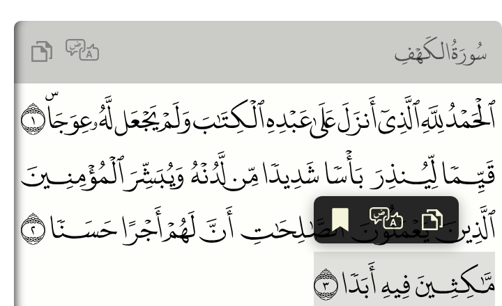

Verse actions¶
Clicking a verse opens a small popup over it. By default it has two buttons: copy the verse and translate, which opens the verse on quran.com. Those are the built-in verse actions: you can choose which ones each tag offers, add your own, or remove them all. New in 2.2.
Actions are registered once for the whole page and are offered by every tag on it, unless a
tag's actions attribute picks a subset.
Choosing actions per tag¶
actions lists the action ids a tag offers. none turns them all off: the verses are then
plain text, with no hover highlight, no pointer and no popup. It also hides the copy and
translate icons in the header (on multi-line renders).
<quran-madina-html sura="2" aya="255" actions="copy"></quran-madina-html>
<quran-madina-html sura="2" aya="255" actions="none"></quran-madina-html>
<QuranMadinaHtml sura={2} aya="255" actions={["copy"]} />
<QuranMadinaHtml sura={2} aya="255" actions={[]} />
<QuranMadinaNative sura={2} aya="255" actions={["copy"]} />
<QuranMadinaNative sura={2} aya="255" actions={[]} />
QuranMadinaFlutter(sura: 2, aya: '255', actions: ['copy'])
QuranMadinaFlutter(sura: 2, aya: '255', actions: [])
[quran sura="2" aya="255" actions="copy"]
[quran sura="2" aya="255" actions="none"]
In the Quran block, the same goes in Verse actions.
Without the attribute, a tag offers every registered action. A verse with no action left is
plain text, whatever the reason: actions="none", every action removed, or every action's
when saying no.
Your own action: bookmarks¶
An action is an id, a title, an icon, and a function to run. This one saves the clicked verse in a list of bookmarks:
<quran-madina-html sura="18" aya="1-10"></quran-madina-html>
<h3>Bookmarks</h3>
<ul id="bookmarks"></ul>
<script>
const bookmarkIcon = '<svg viewBox="0 0 24 24"><path fill="currentColor" ' +
'd="M6 2h12a1 1 0 0 1 1 1v19l-7-4.5L5 22V3a1 1 0 0 1 1-1z"/></svg>';
function bookmarks() {
try { return JSON.parse(localStorage.getItem("bookmarks")) || []; }
catch (e) { return []; }
}
function showBookmarks() {
document.getElementById("bookmarks").innerHTML = bookmarks()
.map((b) => `<li>${b.suraName} ${b.aya} (page ${b.page})</li>`).join("");
}
customElements.whenDefined("quran-madina-html").then((Quran) => {
Quran.registerAction({
id: "bookmark",
title: "Bookmark",
icon: bookmarkIcon,
order: 30, // after copy (10) and translate (20)
onSelect(aya) {
const others = bookmarks().filter((b) => b.sura !== aya.sura || b.aya !== aya.aya);
others.push({ sura: aya.sura, aya: aya.aya, page: aya.page, suraName: aya.suraName });
localStorage.setItem("bookmarks", JSON.stringify(others));
showBookmarks();
},
});
showBookmarks();
});
</script>
import { useState } from "react";
import QuranMadinaHtml, { useAyaAction } from "@tarekeldeeb/quran-madina-react";
const bookmarkIcon = '<svg viewBox="0 0 24 24"><path fill="currentColor" ' +
'd="M6 2h12a1 1 0 0 1 1 1v19l-7-4.5L5 22V3a1 1 0 0 1 1-1z"/></svg>';
export default function Reader() {
const [bookmarks, setBookmarks] = useState([]);
// Registered while Reader is mounted; onSelect always sees the current state.
useAyaAction({
id: "bookmark",
title: "Bookmark",
icon: bookmarkIcon,
order: 30,
onSelect: (aya) =>
setBookmarks((list) => [
...list.filter((b) => b.sura !== aya.sura || b.aya !== aya.aya),
{ sura: aya.sura, aya: aya.aya, page: aya.page, suraName: aya.suraName },
]),
});
return (
<>
<QuranMadinaHtml sura={18} aya="1-10" />
<ul>
{bookmarks.map((b) => (
<li key={`${b.sura}:${b.aya}`}>{b.suraName} {b.aya} (page {b.page})</li>
))}
</ul>
</>
);
}
Outside a component, registerAction, unregisterAction, clearActions and
resetActions are exported too.
const bookmark = { id: "bookmark", title: "Bookmark", icon: bookmarkIcon, order: 30 };
<QuranMadinaNative
sura={18}
aya="1-10"
ayaActions={[bookmark]}
onAyaAction={(s) => saveBookmark(s.sura, s.aya, s.page)}
/>
The text runs in a WebView, so ayaActions carries only the button (id, title, icon,
order). The choice comes back to onAyaAction with the action's id and the verse.
const bookmark = QuranAyaAction(
id: 'bookmark', title: 'Bookmark', icon: bookmarkIcon, order: 30);
QuranMadinaFlutter(
sura: 18,
aya: '1-10',
ayaActions: const [bookmark],
onAyaAction: (s) => saveBookmark(s.sura, s.aya, s.page),
)
onAyaAction gets a QuranAyaSelection: the action's id, sura, aya, page,
text, suraName and layout. On the web, actions are registered for the whole page,
shared by every widget there; actions still picks per widget.
The bookmark button now shows after copy and translate:

What onSelect gets¶
| Field | Value |
|---|---|
sura, aya |
The verse, e.g. 2 and 255. |
page |
The Mushaf page it's on, in the current print. |
text |
The verse text, the same as copy gives. |
suraName |
The sura's name. |
layout |
1441H, 1405H or IndoPak. |
tag |
The <quran-madina-html> element. |
element |
The clicked line piece of the verse (for positioning something next to it). |
close() |
Closes the popup. It closes by itself after any action. |
when gets the same object.
Icons¶
icon is SVG markup, an image URL, or a DOM element. Use fill="currentColor" in SVG so the
icon follows the popup's colour, as the built-in ones do. Icons show at 20 px. SVG markup is
inserted as HTML, so pass your own markup, never text a visitor typed. Without an icon the
button shows the title.
Only on some verses¶
when decides per verse. A verse where no action's when returns true is plain text.
Quran.registerAction({
id: "play",
title: "Play recitation",
icon: playIcon,
when: (aya) => hasAudio(aya.sura, aya.aya),
onSelect: (aya) => play(aya.sura, aya.aya),
});
Removing the defaults¶
customElements.whenDefined("quran-madina-html").then((Quran) => {
Quran.unregisterAction("translate"); // keep copy only
// Quran.clearActions(); // no actions at all: verses are plain text
// Quran.resetActions(); // back to copy and translate
});
To turn them off for one tag only, use the actions attribute.
On WordPress¶
The actions shortcode attribute and the block's Verse actions setting choose per tag. To
add your own action, add a script after the plugin's, from your theme or a small plugin:
add_action( 'wp_enqueue_scripts', function () {
wp_add_inline_script( 'quran-madina-html', <<<'JS'
customElements.whenDefined("quran-madina-html").then(function (Quran) {
Quran.registerAction({
id: "share", title: "Share",
icon: "<svg viewBox='0 0 24 24'><path fill='currentColor' d='M18 16a3 3 0 0 0-2.4 1.2l-7-3.5a3 3 0 0 0 0-1.4l7-3.5A3 3 0 1 0 15 7l-7 3.5a3 3 0 1 0 0 3l7 3.5A3 3 0 1 0 18 16z'/></svg>",
onSelect: function (aya) {
navigator.share({ text: aya.text, url: location.href + "#" + aya.sura + ":" + aya.aya });
}
});
});
JS
);
}, 20 );
The library loads only on pages that show Quran text, and the script runs only there.
See the JavaScript API for every function and field.